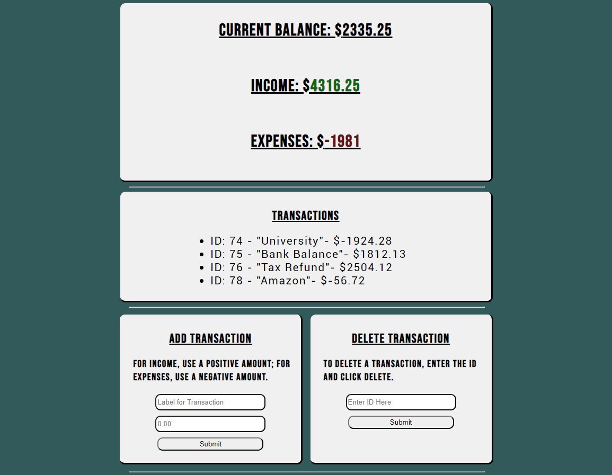
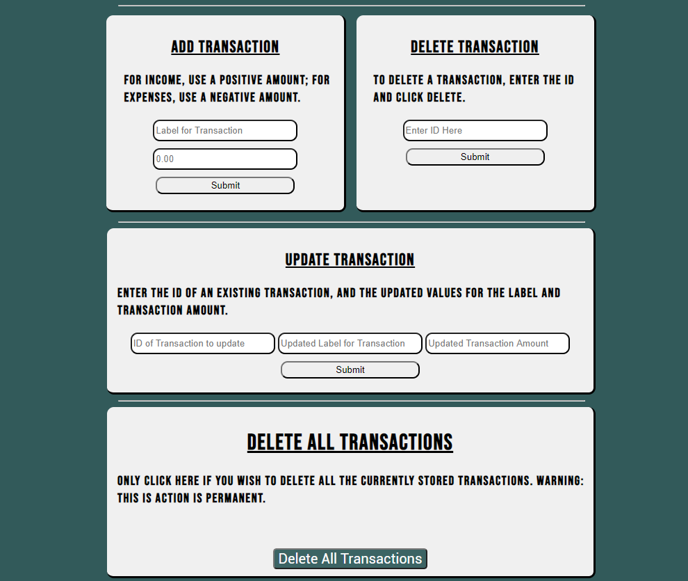

Expense Tracking App
 This application was built with Express API routing, jQuery, and a SQLite database. The database stores transactions, both expenses and income, and allows the user to keep track of their current financial status. The application also uses unique IDs to keep track of transactions, which in turn gives the user the ability to edit or delete transactions. This application could also easily be scaled up to a system by creating separate databases for each user and have them only be accessible by logging in with personal credentials.
The application is not live currently, but to see the code repository, please